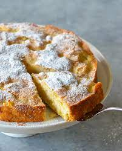
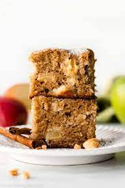

Apple Breakfast Cake

Description
Apple crisp, apple fritters, apple doughnuts, apple cider vinegar… apple is everywhere right now! To keep with that trend, we’re gonna make some Apple Breakfast Cake! It tastes just as good as an apple pie, it’s way healthier, and it only takes a few minutes to prep.

Ingredients
- 250g Kodiak pancake mix
- 1 tsp baking powder
- 2 tsp cinamon
- 1/4 tsp salt
- 3 eggs
- 100g egg whites
- 1/2 cup almond milk
- 1/2 cup sugar-free maple syrup
- 100g fat-free greek yogurt
- 1 tsp vanilla extract
- 500g thinly-sliced honeycrisp apples
- 1 tbs granulated SWerve
- Cooking spray
Steps
- Preheat oven to 350. Grease an 8x13 cake pan with cooking spray and set aside.
- In a medium bowl, whisk dry ingredients (except swerve) together and set aside.
- In another bowl, whisk together greek yogurt and eggs. Add egg whites, vanilla, almond milk and syrup and whisk thoroughly. Add to dry ingredients and mix until well blended.
- Pour half of the batter into cake pan, top with sliced apples and remaining batter. Using a spatula, smooth batter over the apples to make sure they are evenly covered. Sprinkle swerve over top.
- Bake for 30 min, rotating half way.
- Let rest in the pan for at least 10 minutes.
- Cut 6 squares and cool on a rack before refrigerating. Enjoy warm, topped with sugar free maple syrup or cold.